文字
背景
行間


SSH活動報告
 佐倉サイエンス(研究テーマ発表会)
佐倉サイエンス(研究テーマ発表会)
発表会を行ったのは理数科1年生です。
今年度佐倉サイエンスの授業で物理・化学・生物・地学・数学の分野の実験・考察等を3回ずつ行い、
様々な分野に触れ、各々研究していきたい分野が定まってきました。
年明けからは来年度の課題研究Ⅰの授業に向けて研究テーマを考えていたので、
今回はそのテーマと、研究の簡単な概要を発表してもらいました。
発表をしてみて出てきた修正点を担当者と相談し、今週中に方向修正をします。
来週の佐倉サイエンスでは今回参加していない教員も参加して、より詳しい研究の概要を発表する予定です。
今年度までのＳＳ課題研究Ⅰの授業は週1時間でしたが、
来年度からはＳＳ探究Ⅰという名称に変わり、週2時間に増えるので、
十分に実験や考察する時間をとることができ、これまで以上に研究を深めることができます。
今年度までの理数科の課題研究のテーマ一覧は、以下のリンクからご覧ください。
http://153.127.209.180/cms2_chiba-c/sakura-h/nc2/ssh/%E8%AA%B2%E9%A1%8C%E7%A0%94%E7%A9%B6%E3%81%AE%E5%8F%96%E7%B5%84/
SENEC課題研究発表会
SENEC課題研究発表会とは、SSHコンソーシアム千葉における生徒研究を軸にした
千葉県東部地区理数科設置校及びSSH関係校、合計9校の生徒の交流とともに、
課題研究の成果を共有するための発表会のことです。
県内では数年ぶりの対面式のポスター発表会で、感染症対策をしっかりとした上で行われ、
発表者や観覧者を合わせると数百人の規模となりました。
A0サイズのポスターを会場に貼り、発表するグループと発表を聴きに行くグループに交代で分かれ、
時間の限り発表していく形式で実施されました。
本校からは理数科2年生29名が参加しました。
(クラスの今回参加しない生徒たちはまた別の発表会に参加する予定です。)
発表に対して意見を交換し合い、学校を越えて交流することで、
個々の見識が広がり、プレゼン能力やコミュニケーション能力が向上し、
改めて自分たちの研究内容を見つめ直すことができました。
ＡＬＴの先生も参加していて、急遽英語でプレゼンし、英語で質問された班もありましたが、
しっかりと英語で答えることができていました。
3月にもポスター発表会があるので、それまでに今回の反省点を修正し、
より完成度の高い研究、ポスター、発表に仕上げていきます。
理数科2年生の課題研究のテーマ一覧は、以下のリンクからご覧ください。
http://153.127.209.180/cms2_chiba-c/sakura-h/nc2/ssh/%E8%AA%B2%E9%A1%8C%E7%A0%94%E7%A9%B6%E3%81%AE%E5%8F%96%E7%B5%84/
学びの発表会
学びの発表会とは、1年間の課題研究の成果を学年ごとにクラスを越えて報告し合う会です。
1学年は普通科73班の発表を10会場に分け、
2学年は普通科72班・理数科20班の発表を12会場に分けて行いました。
発表時間は8分厳守で、その後1分のシンキングタイム、7分の質疑応答、
4分でコメントシートの記入と発表班入れ替えという形式です。
下の写真は理数科2年生が発表をしている様子です。
内容は
「酸性の溶液による消臭効果」(写真①)
「改良型パイクリートの考案と作製」(写真②)
「バラ曲線の弧長」(写真③)
「流固体の流れる量と角度の関係」(写真④)
です。
これらはほんの一部で、他にも多くの班が発表しています。
写真① 写真②
写真③ 写真④
今後は発表会の反省を生かし、スライドや発表の修正をして、
来週の学年も越えて同様に発表をする課題研究発表会に備えます。
理数科2年生の課題研究のテーマ一覧は、以下のリンクからご覧ください。
http://153.127.209.180/cms2_chiba-c/sakura-h/nc2/ssh/%E8%AA%B2%E9%A1%8C%E7%A0%94%E7%A9%B6%E3%81%AE%E5%8F%96%E7%B5%84/
小学生に探究活動の発表会
1月26日(木)に普通科1・2年生が小学生向けに探究活動についての発表会を行いました。
来校したのは柏市立土小学校の6年生が60名です。
本校の学思館(セミナーハウス)で実施しました。
30名ずつ2グループに分け、各部屋で普通科1・2年生が2班ずつ発表し、
その中で「成田山の算額」について研究している班も発表しました。
算額とは何か、どのようにして庶民に算額の文化が広まったのかを伝え、実際の算額の写真を見せました。
算額は古い言葉で書いてあり、小学生には読むことすら難しい内容です。
この班では事前に小学生向けの図形の問題を算額風に作成していたので、その問題を小学生に挑戦してもらいました。
小学生はとても意欲があり、用意していた問題だけでは足りず、
「もっと問題をください！」とコメントをくれた子もいました。
この班は難易度を分けていくつも作問しているため、2月7日(火)の課題研究発表会では
高校生向けの難しい図形の問題を使って発表する予定です。
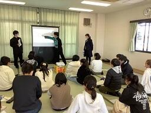
算額の探究班の過去の活動については、以下のリンクからご覧ください。
算額の世界(成田山新勝寺・霊光館での活動)
https://cms2.chiba-c.ed.jp/sakura-h/blogs/blog_entries/view/47/8ffc24d0098344a1ba4b7b952d17bf86?frame_id=212
算額の世界(天元術)
https://cms2.chiba-c.ed.jp/sakura-h/blogs/blog_entries/view/47/cfccb40e3513bc0492a798e72ae84a03?frame_id=212
SENEC課題研究発表会準備
SENEC課題研究発表会とは、SSHコンソーシアム千葉における生徒研究を軸にした
千葉県東部地区理数科設置校及びSSH関係校、合計9校の生徒の交流とともに、
課題研究の成果を共有するための発表会のことです。
A0サイズのポスターを会場に貼り、発表するグループと発表を聴きに行くグループに交代で分かれ、
時間の限り発表していく形式で実施されます。
発表会は2月1日(水)に行われ、本校からは理数科2年生29名が参加します。
クラスの今回参加しない生徒たちはまた別の発表会に参加する予定です。
現在発表会の準備のため、各班の発表資料をポスターにまとめ、印刷をしています。
見やすいポスターを作成するために理科や数学、情報の教員にアドバイスを求め、順調に準備が進んでいます。
 情報オリンピック女性部門本選
情報オリンピック女性部門本選
日本情報オリンピックとは高等学校2年生までの競技プログラマー日本一を決める大会で、
今回の女性部門本選はヨーロッパ女子情報オリンピックへ派遣する日本代表選手選考会も兼ねています。
競技はオンラインで実施され、予選はC・Java・Python・Rubyなど、様々な言語が対応していますが、
本選以降はC++のみ使用可能となっています。
本校からは1年生の川瀬瑠音さんと宗政花欧里さんが本選に参加しました。
本選は6問を4時間かけて解き、600点満点で採点されます。
宗政花欧里さんは規定の点数に達したため、敢闘賞を受賞しました。
2名は来年度も参加するため、また1年間対策を進めていきます。
日本情報オリンピック第3回女性部門本選の概要は以下のリンクからご覧ください。
https://www.ioi-jp.org/joig/2022/index.html
その他情報オリンピック関連の情報は以下のリンクからご覧ください。
https://www.ioi-jp.org/
 SSH通信No.13
SSH通信No.13
SSH通信No.13を発行しました。
内容はSSH箱根サイエンスツアー(2日目)についてです。
下の画像をクリックすると見ることができます。
ぜひご覧ください。
過去のSSH通信一覧は以下のリンクからご覧ください。
SSH通信No.13
 サイエンス・ダイアログ講座第3回
サイエンス・ダイアログ講座第3回
サイエンス・ダイアログとは、日本学術振興会(JSPS)が実施している「外国人特別研究員事業」を活用し、
来日している外国人研究者(フェロー)を講師として招き、自身の研究や出身国に関する講義を
英語で行うことにより、科学への興味・関心を高めるとともに、国際理解を深めるというものです。
講師は東京大学大学院理学系研究科化学専攻生物有機教室の先生です。
「Travelling with Science and Reprogramming the Code of Life
(科学とともに旅をし、生命のコードをリプラミングする)」というテーマで、
普通科・理数科の1・2年生希望者を対象として講演していただきました。
今回の先生は出身国フランスにて化学に興味をもち、
その後薬学、バイオサイエンスへと研究分野を広げてこられたそうです。
その際にフィンランド、スイス、スウェーデン、そして日本へと渡り歩いてきたとのことでした。
参加生徒の事後アンケートには
「化学を研究する良さを経験をもとにして話してくださり、海外で働きたいという気持ちが高まった。」
「先生の来歴が面白く、刺激になった。」
「英語で話すことを恐れなくても良いといってくれて勇気が出た。」
などの意見がありました。
とても高度な内容でしたが、最先端の研究を知ることができ、
積極的に質問し、英語によるコミュニケーション能力を向上させることができました。
サイエンス・ダイアログについての詳細は以下のリンクから日本学術振興会のホームページでご覧ください。
https://www.jsps.go.jp/j-sdialogue/
日本情報オリンピック2022/2023
また、本校が第22回日本情報オリンピックの指定校に認定されました。
日本情報オリンピックとは高等学校2年生までの競技プログラマー日本一を決める大会で、
国際情報オリンピック2023ハンガリー大会へ派遣する日本代表選手選考会も兼ねています。
競技はオンラインで実施され、予選はC・Java・Python・Rubyなど、様々な言語が対応していますが、
本選以降はC++のみ使用可能となっています。
2年生の杉本一樹くんは昨年9月から11月までの1次予選、12月の2次予選を通過し、
2月12日(日)に行われる本選に出場します。
第22回日本情報オリンピック本選出場者一覧は以下のリンクからご覧ください。
https://www.ioi-jp.org/joi/2022/2023-joi-ho-list.html
予選は女性部門本選の選考も兼ねており、
1年生の川瀬瑠音さんと宗政花欧里さんは1月22日(日)に行われる女性部門の本選に出場します。
日本情報オリンピック第3回女性部門本選出場者一覧は以下のリンクからご覧ください。
https://www.ioi-jp.org/joig/2022/2023-joig-ho-list.html
また、第22回日本情報オリンピックの指定校の要件に達しましたので、
本校は今年度の指定校として認定されました。
第22回日本情報オリンピックの指定校一覧は以下のリンクからご覧ください。
https://www.ioi-jp.org/joi/2022/shiteikou.html
その他情報オリンピック関連の情報は以下のリンクからご覧ください。
https://www.ioi-jp.org/
SSH通信No.12
SSH通信No.12を発行しました。
内容はSSH箱根サイエンスツアー(1日目)についてです。
下の画像をクリックすると見ることができます。
ぜひご覧ください。
過去のSSH通信一覧は以下のリンクからご覧ください。
SSH通信No.12
SSH箱根サイエンスツアー(2日目)
12月21日(水)～22日(木)の2日間、理数科2年次の生徒が参加するSSH箱根サイエンスツアーが行われました。
このサイエンスツアーは、今年度は中止となったSSH理数科海外研修の代替の活動として実施したものです。
東京～箱根方面の各施設で、専門家の方々の説明を聞き、それぞれの研究分野の最前線を体験することにより，
科学への興味関心を高めることが目的です。
悪天候により、大涌谷は視界が悪く見学しづらい状況だったので、
学芸員さんの解説を聴き、近場の見下ろせる範囲だけの観察だけしてジオミュージアムに戻りました。
ジオミュージアム内では箱根の火山の歴史や地形の成り立ちの解説を聴き、
硫黄の観察や箱根付近の地形のジオラマの観察を行いました(写真1,2)。


写真1 写真2 写真3
箱根から東京へ向かう途中で山伏峠展望台に寄り、中央火口丘や流れ出た溶岩がつくる地形を観察する予定でしたが、
悪天候により視界が悪く、何も観察が出来ない状態だったため、バスから降りることは断念しました。
2日目の午後は東京理科大学神楽坂キャンパスへ行き、2班に分かれ、
近代科学資料館の見学と数学体験館で体験活動を行いました。
近代科学資料館では、東京理科大学の創設から140年の沿革や近代の科学史年表、
江戸～明治時代の文献、エジソンの蓄音機などが展示されており、
解説を聴いた後、各々興味のある展示を見学しました(写真4)。
今年度の企画のノーベル生理学・医学賞を受賞した大村智先生の「大村智記念展示室」も見学することが出来ました。
数学体験館では、中学・高校の数学の授業で学ぶ内容を実験し、
五感で体験して納得することのできる教具・教材に触れることが出来ます。
この施設をつくったのは東京理科大学栄誉教授で数学者の秋山仁先生です。
事前学習で放物線や楕円の焦点について学んでいたので、
「パラボラアンテナ」や「楕円型ビリヤード」でボールが焦点に集まることを体感することが出来ました(写真5)。
また、理数科2年生は現在SS数学Ⅱの授業で数学B「確率分布と統計的な推測」の分野を学習しており、
「二項分布パチンコ」で二項分布の仕組みを理解することが出来ました。
他にも多数の教具がフロア中に置いてあり、生徒は時間いっぱい熱中して実験を行っていました(写真6)。
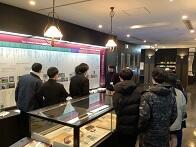 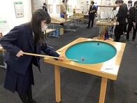 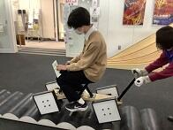
写真4 写真5 写真6
箱根サイエンスツアー事前学習の様子は以下のリンクからご覧ください。
https://cms2.chiba-c.ed.jp/sakura-h/blogs/blog_entries/view/47/2886ef58c4d7555da4d8e73bef88daf5?frame_id=212
箱根サイエンスツアー(1日目)の様子は以下のリンクからご覧ください。
https://cms2.chiba-c.ed.jp/sakura-h/blogs/blog_entries/view/47/f08fd8feb0d3df4285a6b700479a879e?frame_id=212
SSH箱根サイエンスツアー(1日目)
12月21日(水)～22日(木)の2日間、理数科2年次の生徒が参加するSSH箱根サイエンスツアーが行われました。
このサイエンスツアーは、今年度は中止となったSSH理数科海外研修の代替の活動として実施したものです。
東京～箱根方面の各施設で、専門家の方々の説明を聞き、それぞれの研究分野の最前線を体験することにより，
科学への興味関心を高めることが目的です。
日本科学未来館の二手に分かれて見学を行いました。理研の見学ツアーの参加者はさらに二手に分かれ、
生命機能科学研究センターのNMR(核磁気共鳴)装置(写真1,2)または
クライオ電子顕微鏡(写真3)をそれぞれ間近でみることができました。
NMRは、強い磁場の中にある原子が電波をどのように吸収するか(スペクトル)を調べることで、
原子のつながりや分子の形を知る方法です。
クライオ電子顕微鏡法は、タンパク質溶液や細胞を急速凍結させることで電子顕微鏡での観察を可能にした方法で、
近年は画像処理により生体分子の三次元構造を原子レベルの解像度で知ることもできるようになっています。
これらの装置を用いて、発生・成熟・老化のような生命現象すべての解明を目指していることがよくわかりました。


写真1 写真2 写真3
計10班に分かれ、計算機・未来逆算・ニュートリノ・加速器・細胞・人間関係など、
各班のテーマのブースを体験しました。
自然とは何か、デジタルとアナログの違いは何か、それらは連続しているかを考えさせられたり(写真4)、
インターネットにおけるのデータ送信の仕組みを体験したり(写真5)、
たくさんの人間と関わる「社会」の中での人間の性質、人間関係の仕組みを学びました(写真6)。
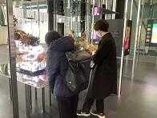


写真4 写真5 写真6
1日目の午後はJAXA相模原キャンパスへ移動し、宇宙科学探査交流棟で展示解説ツアーに参加しました。
前日までの事前学習で学んだ小惑星探査機「はやぶさ」や小惑星「イトカワ」の解説を改めて聴き、
疑問点のある生徒たちがどんどん質問していき、小惑星探査に関する知識を深めていきました。
ロケットの燃料タンクの材質を体感し(写真8)、
館内の大きな壁に宇宙科学関連の映像を投影する「壁面シアター」も見ることが出来ました。
 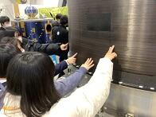 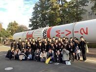
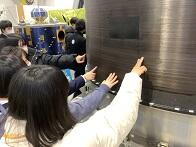 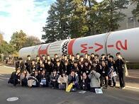写真7 写真8 写真9
JAXAから箱根へ向かうバスの中ではブラタモリの箱根温泉や地形の歴史の回のビデオを見ました。
夕方には大観山展望台へ行き、日没時の富士山や芦ノ湖だけでなく、
外輪山やカルデラ、中央火口丘などの地形も観察しました(写真10,11,12)。
このとき気温は1℃しかなかったため、観察と写真撮影だけ行ってすぐバスに戻りました。

 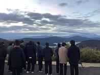
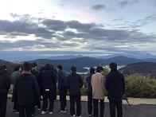写真10 写真11 写真12
宿に着き夕食後、午前中の各班の調査結果報告会が行われました。
バス移動の時間や宿の自由時間を利用して、googleクラスルームで配信した課題レポートに
調査結果や感想、写真を載せて全員提出していたため、
その写真を投影しながら報告会を行うことでスムーズに進行しました。
短い準備時間でしたが、自主的に英語で発表する班もあり、クオリティの高い報告会となりました。
ツアー2日目については後日掲載します。
箱根サイエンスツアー事前学習の様子は以下のリンクからご覧ください。
https://cms2.chiba-c.ed.jp/sakura-h/blogs/blog_entries/view/47/2886ef58c4d7555da4d8e73bef88daf5?frame_id=212
 SSH有機化学実験講座
SSH有機化学実験講座
 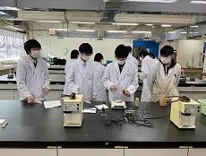
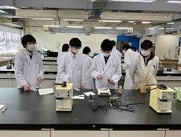 


 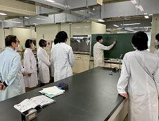
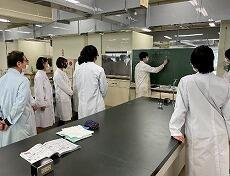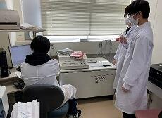 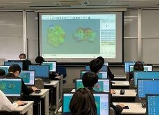 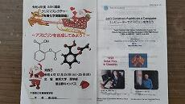
SSH「箱根サイエンスツアー」事前学習
サイエンスツアーに参加するのは2年生理数科39名です。
様々な研究施設の見学や、展望台からの火山の観察などを行う予定です。
1日目は日本未来科学館と理化学研究所横浜キャンパスへ行き、班ごとに異なる内容の見学を行う予定です。
事前学習として、物理の授業で複数回にわたって液体窒素を使った実験を行い、超伝導体を観察し、
それらが理化学研究所のNMR研究に活かされていることを学習しました。
また、JAXAの相模原キャンパスに行き、宇宙科学探査交流棟の見学もする予定なので、
事前学習として12月19日(月)に、小惑星探査機はやぶさについての資料映像を見ました。
2日目は東京理科大学神楽坂キャンパスの数学体験館に行く予定なので、
事前学習として12月19日(月)の数学の授業で「楕円」について学習しました。
さらに、本日の数学の授業には地学の教員も参加して、「楕円」とのつながりがあり、
宇宙科学にも関連している「ケプラーの法則」や「地球スイングバイ」について教科横断型で学習しました。
数学体験館には楕円形のビリヤード台があるようなので、
壁(地球の位置)からの跳ね返り軌道の観察を繰り返し、焦点(太陽の位置)を特定してきます。
 英語による科学研究発表会
英語による科学研究発表会
12月17日(土)に水戸で開催され、理数科の2年生3名が参加しました。
この発表会は毎年開催されており、茨城県やその周辺の県のSSH校が集まって発表をします。
午前中に大ホールでスライド発表を使った口頭発表が行われ、午後にポスター発表が行われました。
発表件数は口頭発表が9校13件、ポスター発表が12校38件でした。
発表だけでなく、質疑応答も英語で行われます。
発表テーマは
「Non-slip material made from eggplant skin(ナスが織りなす滑り止め)」
「Making new speakers using dolphin melon mechanism!(イルカスピーカーをつくる！！)」
「Comparing strength of tessellations(平面充填の強度の比較)」
でした。
発表会やその準備を通して、研究内容を深化させ、
英語によるプレゼンテーション能力やコミュニケーション能力を向上させることができました。
 算額の世界(天元術)
算額の世界(天元術)
SSH講座「算額の世界(天元術)」を開講しました。
12月13日(火)の放課後に開講し、和算について研究している1年普通科7名が参加しました。
「天元術」とは鎌倉時代に中国から伝わり、江戸時代に一般に普及したもので、
算木と算盤という道具を使って、足し算やかけ算だけでなく、高次方程式なども解くこともできる算術のことです。
TA(ティーチングアシスタント)の千葉大学教育学部学校教員養成課程4年の三橋可奈さんは
現在、大学で和算に関して研究しているので、まず和算の歴史的背景や「天元術」について講義をしてもらいました。
西洋数学との違いや、和算が発展した要因となる「遺題継承」について熱く語ってもらいました。
「天元術」を使った問題の資料も見せてもらい、昔の人々が8次方程式を解いていたことに驚きました。
その後紙製の算木と算盤を使って2次方程式を解く演習を行いました。
生徒も教員も理解が出来ない手順が1つありましたが、
そこは慣れた人が何手も先読みして予測しなければならない手順だと知り、
江戸時代の人々の計算能力の高さに驚愕しました。
TAの三橋さんには今後も継続して指導に関わってもらう予定です。
算額の過去の探究の様子は以下のリンクからご覧ください。
https://cms2.chiba-c.ed.jp/sakura-h/blogs/blog_entries/view/47/8ffc24d0098344a1ba4b7b952d17bf86?frame_id=212
SSH通信No.11
SSH通信No.11を発行しました。
内容は佐倉アクティブ「ゾムツール(立体図形)講座」についてです。
下の画像をクリックすると見ることができます。
ぜひご覧ください。
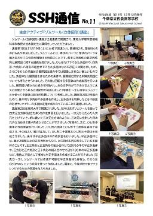
過去のSSH通信一覧は以下のリンクからご覧ください。
SSH通信No.11
SSH通信No.10
SSH通信No.10を発行しました。
内容は佐倉アクティブ「チバニアンってなんだ？」についてです。
下の画像をクリックすると見ることができます。
ぜひご覧ください。
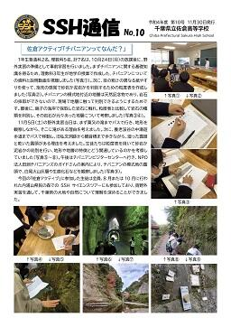
過去のSSH通信一覧は以下のリンクからご覧ください。
 佐倉アクティブ「ゾムツール(立体図形)講座」第2回
佐倉アクティブ「ゾムツール(立体図形)講座」第2回
https://cms2.chiba-c.ed.jp/sakura-h/blogs/blog_entries/view/47/53e88d7f58d3b285714595d30d6bcd88?frame_id=212


 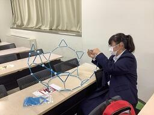
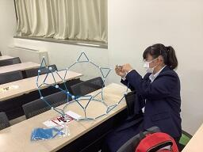

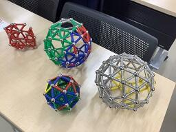 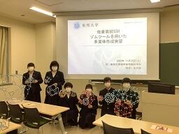
 第25回数理科学コンクール
第25回数理科学コンクール
数理科学コンクールとは、千葉大学先進科学センター主催で
水の惑星にどんな波が起こるか？丈夫な家に柱は何本必要か？など、
以前は千葉大学を会場として開催されていて、グループ対抗で
実験器具や書籍がたくさん用意されている規模の大きいコンクールでしたが、
コロナ禍の影響で、自宅に実験キットが送られてきて
2日間かけて各自実験し、分析・考察する形式になっています。
結果は例年3月に発表されていますので、受賞者が出たらまたお知らせをします。
https://www.cfs.chiba-u.ac.jp/events/math/index.html
JSEC最終審査会出場
JSEC2022(第20 回高校生・高専生科学技術チャレンジ)とは、
全国の高校生と、高等専門学校生を対象に、2003年に始まった科学技術の自由研究コンテストです。
幅広い分野から研究作品を募り、専門家による書類審査とプレゼンテーション審査があります。
科学研究について研究成果を検証するだけでなく、研究者の知的好奇心や課題解決能力、
実験・調査の過程における工夫、チームワークやプレゼンテーションスキルなどを総合的に評価するのが特長です。
今年は全国から339件の研究作品の応募があり、
さらに一次審査会議の結果、30研究作品が最終審査会に出場します。
「ISEF」（International Science and Engineering Fair／国際学生科学技術フェア）
に、日本代表として出場します。
JSEC2022(第20 回高校生・高専生科学技術チャレンジ)の詳細は以下のリンクからご覧ください。
https://manabu.asahi.com/jsec/
佐倉サイエンス③
グラフに記入して近似曲線を描き、絶対零度を推測する実験をしました。
 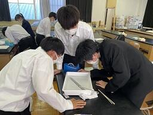
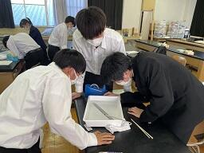化学分野はシュウ酸水溶液に濃度不明の水酸化ナトリウム水溶液で中和滴定を行い、
水酸化ナトリウム水溶液の濃度を調べ、さらにその水酸化ナトリウム水溶液を利用して
クエン酸の分子量を測定する実験を行いました。


生物分野はスルメイカの和名の由来、学名、生態、持っている呼吸色素の色などを学習し、
さらにスルメイカの解剖実験を行いました。
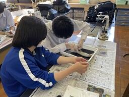
地学分野は簡易日射計を用いて地表で受ける日射量を測定し、
季節や地球上の場所などの条件を変えたとき、得られるエネルギーがどれくらい変化するか、
宇宙へどれくらい反射しているかなどを考察しました。


数学分野は科学雑誌「Newton」の中で、数学の特集が組まれている冊子を集め、
生徒が興味のある分野について読み、文献調査の練習をしました。
 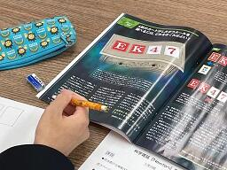
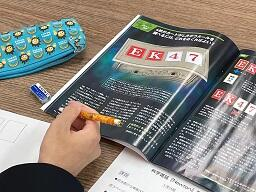
サイエンス・ダイアログ講座第2回
サイエンス・ダイアログとは、日本学術振興会(JSPS)が実施している「外国人特別研究員事業」を活用し、
来日している外国人研究者(フェロー)を講師として招き、自身の研究や出身国に関する講義を
英語で行うことにより、科学への興味・関心を高めるとともに、国際理解を深めるというものです。
講師は東京大学農学生命科学研究科応用生命科学専攻土壌圏科学研究室の先生です。
参加生徒の事後アンケートには
「事前学習で専門用語を学んでいたのである程度理解できた。」
「聞き取れたとき、自分の知識と結びついたとき、とても嬉しかった。」
「土壌微生物学はおもしろいと思った。生物の学習意欲が高まった。」
などの意見がありました。
サイエンス・ダイアログについての詳細は以下のリンクから日本学術振興会のホームページでご覧ください。
https://www.jsps.go.jp/j-sdialogue/
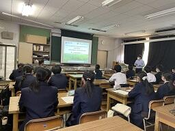 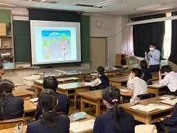


科学の甲子園
会場は千葉県総合教育センターで、本校の出場は10年連続10回目です。前日まで、修学旅行で充電・蓄電してきた力を十分に発揮して、筆記競技と実技競技に挑んできました。県内各地から理数を得意とする精鋭が集まる大会で、仲間とともに頭を悩ませたり、他校のアイデアに驚いたりした、充実した1日でした。
大会の詳細は以下のリンクからご覧ください。
https://www.pref.chiba.lg.jp/kyouiku/shidou/gakuryoku/koushien/koushien.html
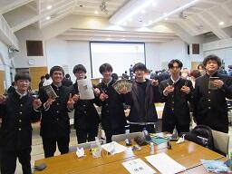
 佐倉アクティブ「ゾムツール(立体図形)講座」
佐倉アクティブ「ゾムツール(立体図形)講座」
東邦大学理学部情報科学科教授の並木誠先生に講師をしていただきました。
1、2年生対象で11月19日(土)に本校多目的室2で開講され、普通科2名、理数科4名の計6名が参加しました。
ゾムツールとは、棒状のパーツと球状のパーツを組み合わせて立体物を構築する玩具のことです。
前半は多面体の数学的性質と展開図に関する講義を受けました。
ひし形だけでできた多面体や、四角形・六角形・八角形の組合せでできた多面体などの存在には驚きましたが、
さらにそれらの多面体の展開図は頭の中では想像しきれない難しいものでした。
多面体から展開図を作るための条件や、展開図に関する未解決問題についても考えさせられました。
その後、回転する多面体の作成実習を行いました。
展開図が描かれた紙を切り貼りしていくと、ある文字列ができあがるように永久に回転させられる立体図形が完成しました。
後半はゾムツールを使って多面体の数学的性質について考察しました。
次週行われる講座第2回の準備のために、基本的な多角形や多面体を作成し、
正多面体を切断したときの断面の形状や、
オイラーの多面体定理が成り立っていることを確認しました。
「ゾムツール(立体図形)講座」第2回は11月26日(土)に東邦大学で開講される予定です。
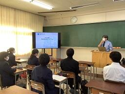

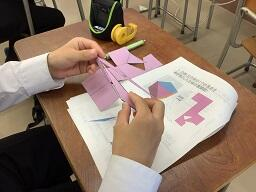 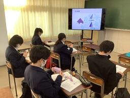
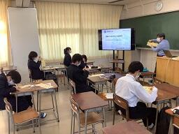


 SSH講座「チバニアンってなんだ？」
SSH講座「チバニアンってなんだ？」
11月5日(土)にSSH講座「チバニアンってなんだ？」が開講されました。
学校からバスで粟又の滝付近まで行き、周辺を観察しました。
GSSP付近で国本層の露頭を観察しました。
10月24日(月)の放課後にこの講座の事前学習会がが行われており、
生徒たちはその学習会のときに各自作成した粒度表を用いて、砂岩や泥岩の判別を行いました。
講座の事前学習会の様子は以下のリンクからご覧ください。
https://cms2.chiba-c.ed.jp/sakura-h/blogs/blog_entries/view/47/7bff7f7ef8fb6ac469f7e5906d5319cc?frame_id=212
SSH通信No.9
SSH通信No.9を発行しました。
内容はSSH講座「気付く・探る・考える」と伊豆大島徹底Fieldworkについてです。
ぜひご覧ください。
過去のSSH通信一覧は以下のリンクからご覧ください。
SSH通信No.9
佐倉アクティブ「チバニアンってなんだ？」事前学習
11月5日(土)に1年生普通科2名、理数科5名、計7名は養老渓谷周辺でフィールドワークを実施予定です。
10月24日(月)の放課後にフィールドワークを行うための事前学習会を行いました。
まずフィールドワークに行くための準備や、チバニアンに関する基礎知識を仕入れるための講義が行われました。
フィールドワークをするエリアは天然記念物に指定されており、採掘することができないため、
石などに触れて指先の感覚だけで砂岩か泥岩かを判別できるように、各自紙やすりを使って粒度表を作成しました。
その後、銚子方面でとれた石に触れ、粒度表と比較して石がどの種類に属しているのか判別し、
その石がとれた地域の特徴について分析をしました。
この講座に参加する生徒は全員SSH国内サイエンスツアー(内浦山野外実習)にも参加しており、
フィールドワークや千葉県の地層に興味を持った生徒たちが集まっています。
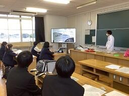

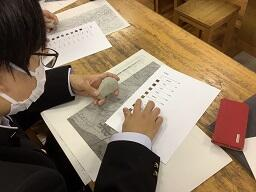 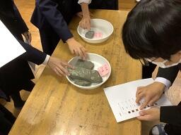
SSH通信No.8
SSH通信No.8を発行しました。
内容はSSH国内サイエンスツアー(内浦山野外実習)についてです。
ぜひご覧ください。
過去のSSH通信一覧は以下のリンクからご覧ください。
SSH通信No.8
SSH国内サイエンスツアー(内浦山野外実習)
参加したのは普通科5名、理数科34名の計39名です。
2年生は本来昨年度の野外実習に参加する予定でしたが、直前の台風の影響で中止になり、
今回念願の野外実習を実施することできました。
その後、別の山で急斜面を這い登り、道なき道を進んで到達したモミの遺存林を観察しました。
2日は午前中片道約5ｋｍの林道沿いにいくつかある露頭にて地学実習を行い、
地層の詳細な観察から千葉県がどのように出来てきたかを考察しました。
午後は生物実習で、主に植物の同定や鑑別点等について、現物を前に解説を聴きました。
夜は葉っぱテストが行われ、30種程度の植物に関して出題されました。
（漁業権に関しても地元漁協からの許可を得ています）
海岸生物の観察実習，潮汐の様子と原理などを学習しました。
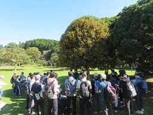
SSH通信No.7
SSH通信No.7を発行しました。
内容は9月24日(土)に千葉大学で開催された第16回高校生理科研究発表会についてです。
ぜひご覧ください。https://cms2.chiba-c.ed.jp/sakura-h/17872fd488f90b7aed8eec4572b51f71/SSH%E9%80%9A%E4%BF%A1
佐倉サイエンス(未知の気体の特定)
気体の状態方程式を利用して気体の特定をしました。
より正確な値を出すために、実験時の大気圧を
スマートフォンのアプリから調べるなどの工夫もしました。
SSH講座「気付く・探る・考える」
千葉県立農業大学校准教授の清水敏夫先生に
「有害生物の防除技術開発による環境保全型農業への取組み」というテーマで講演していただきました。
講演内容は
① 千葉県立農業大学校で販売している飛ばないテントウムシによる害虫防除技術について
② 絶滅危惧生物アズマヒキガエルを活用した害虫防除技術について
③ 7月6日に特許を出願したジャンボタニシトラップの開発について
④ ①～③の技術開発によって生まれたブランド商品開発の意義について
でした。
研究のテーマ設定や開発理念、実験・考察の仕方、問題解決や実用化に向けたの道筋など、
興味深い内容ばかりで、本校生徒の課題研究活動に生かせるものがたくさんありました。
第16回高校生理科研究発表会
今年度はオンラインと対面のハイブリッド型の発表会でした。
作成した資料は事前にLINC BIZというシステムで投稿し、
参加校の生徒、審査をする先生方が見てコメントをもらっていました。
そのコメントを踏まえ、24日には対面の発表会が行われました。
研究の成果を表に出す初めての機会でみんな緊張していましたが、
たくさんの質問やアドバイスを受け、今後の各自の研究の軌道修正をすることができました。
発表する研究のテーマ一覧は以下のリンクからご覧ください。
http://153.127.209.180/cms2_chiba-c/sakura-h/nc2/ssh/%E8%AA%B2%E9%A1%8C%E7%A0%94%E7%A9%B6%E3%81%AE%E5%8F%96%E7%B5%84/
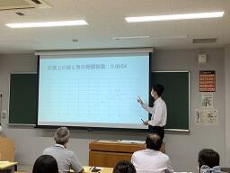
高校生理科研究発表会準備
9月24日(土)に千葉大学で高校生理科研究発表会が開催されます。
今年度はオンラインと対面のハイブリッド型の発表会となります。
現在、発表用のスライドを作成し、オンライン発表用に音声を記録しています。
作成した資料はLINC BIZというシステムで投稿し、参加校の生徒、審査をする先生方が見られるようになります。
発表する研究のテーマ一覧は以下のリンクからご覧ください。
http://153.127.209.180/cms2_chiba-c/sakura-h/nc2/ssh/%E8%AA%B2%E9%A1%8C%E7%A0%94%E7%A9%B6%E3%81%AE%E5%8F%96%E7%B5%84/
佐倉サイエンス(振り子の周期)
それぞれの条件を少しずつ変えながら振り子の周期を測定し、周期が決まる要因を特定しました。
佐倉サイエンス(カエルの解剖)
アフリカツメガエルを解剖し、様々な内臓の観察をしました。
内臓(とくに心臓)を傷つけないようにハサミはできるだけ水平を保つように注意しています。

佐倉サイエンス(岩石の密度)
銚子と鴨川のそれぞれの海岸の石について、特徴を観察し、密度の測定を行いました。
この授業では、生徒が石の色の違いやとれた場所の違いなどに注目し、個々に仮説を立て、
検証の実験計画を立てる練習をすることを目的としています。
SSH通信No.6
SSH通信No.6を発行しました。
内容は8月に神戸で開催された令和4年度SSH生徒研究発表会と、
東京で開催された第46回全国高等学校総合文化祭自然科学部門発表会についてです。
ぜひご覧ください。
https://cms2.chiba-c.ed.jp/sakura-h/17872fd488f90b7aed8eec4572b51f71/SSH%E9%80%9A%E4%BF%A1
SS課題研究Ⅰテーマ一覧
ぜひ以下のリンクからご覧ください。今年度は物理分野の研究が多くなっています。
http://153.127.209.180/cms2_chiba-c/sakura-h/nc2/ssh/%E8%AA%B2%E9%A1%8C%E7%A0%94%E7%A9%B6%E3%81%AE%E5%8F%96%E7%B5%84/
2年生理数科では4月から研究テーマを決め、実験や考察を行っています。
現在は9月24日(土)に千葉大学で行われる第16回高校生理科研究発表会に向けて発表資料を作成しています。
佐倉サイエンス(ゾムツール)
佐倉サイエンスの授業は1年理数科40名を10名ずつの4班に分け、
班ごとに物理や化学、生物など、様々な分野に散らばり、毎週受講分野を変えていきます。
2年生から始まる課題研究に向けて、視野を広げることを目的としています。
写真は本日の数学分野の班の授業風景です。
ゾムツールを使って、正多面体などの立体図形だけでなく、
DNAやサッカーボールなど、身近な物のモデルづくりをしています。
ゾムツールとは、棒状のパーツと球状のパーツを組み合わせて立体物を構築する玩具のことです。


SSH通信No.5
SSH通信No.5を発行しました。
内容は(株)常磐植物化学研究所講座と、「東大・小石川植物園で樹木と向き合う」についてです。
ぜひご覧ください。
https://cms2.chiba-c.ed.jp/sakura-h/17872fd488f90b7aed8eec4572b51f71/SSH%E9%80%9A%E4%BF%A1
SSHコンソーシアム千葉徹底Fieldwork(伊豆大島)
参加生徒はSSHコンソーシアム千葉に参加している4名(理数科2年生1名、理数科3年生3名)です。
SSHコンソーシアム千葉とは、千葉大学と県内SSH校5校(船橋・長生・木更津・柏・佐倉)の
共同研究プログラムのことです。
1日目は2コースに分かれ、生物コースは樹海の散策や火山による植生の破壊からの回復過程の調査を行い、
地学コースは山を登りながら溶岩や火口の観察を行いました。
2日目は1日目のコースを交換して実習を行い、夜は調査の結果を班ごとにまとめ、発表会を行いました。
3日目は火山博物館の見学や地層切断面の観察をしました。
 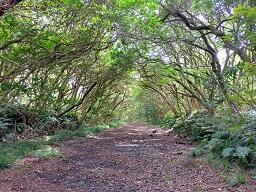
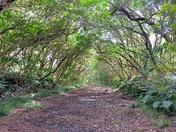 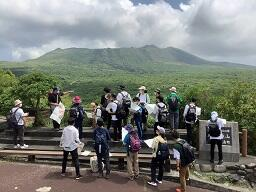

サイエンスツアー(1年内浦山県民の森野外実習)
参加したのは普通科3名、理数科39名です。
生徒は6つの班に分かれ、班長を中心にフィールドワークを行いました。
1日目は森林調査実習で、樹木の高さや直径の計測、樹種の確認、植生断面図の作成などを行いました。
夜は会議室で学習会を行い、各班の調査結果をまとめました。
2日目の往路は地学実習で地層の観察を行い、復路は生物実習で様々な葉っぱの観察をしました。
夜はこの日観察した植物約20種類の中から分類するテストも行われました。
最終日は千葉大学海洋バイオシステム研究センターへ向かい、
センター内の展示室の見学や、岩礁棲生物の観察を行いました。
 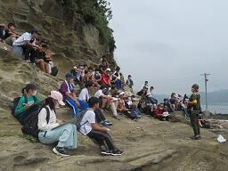
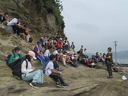 学校説明会SSH体験授業コーナー2日目
ミニ実験教室にご参加の皆さま、ありがとうございました。
2日間行った実験は
① 水に沈んだ卵を浮かべるには？
② 液状化現象のモデル
③ 食塩水と水の境界で起きる光の屈折
④ 地震波と建物の共振
の4種類でした。
手法の紹介だけでなく、なぜその現象が起こるのか、中学生にも理論的に考えてもらいました。
理数科2年生の先輩たちと一緒に実験・考察していくことで、
科学への興味や関心を引き出すことができたのではないでしょうか。
中学生のみなさん、ぜひ来年から一緒に研究していきましょう。
 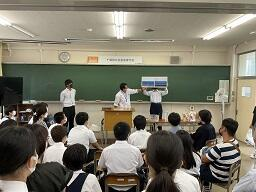
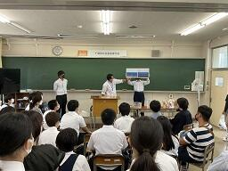
学校説明会SSH体験授業コーナー1日目
ミニ実験教室にご参加の皆さま、ありがとうございました。
想定よりも多くの人数が集まり、後方や廊下からの立ち見の方もいたので、
午前も午後も急遽、2回ずつ実験教室を行いました。
科学と社会問題の内容を絡めつつ、参加型の実験もあったので、
多くの中学生にSSHに興味を持っていただけたのではないでしょうか。
明日はさらに見学者が多くなることが予想されます。
人数によっては本日と同様に、午前・午後ともに、
説明会の放送終了後20分間隔で2回実験教室を行いますので、
空いている方の回にぜひご参加ください。
 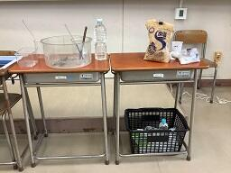
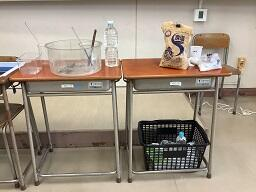 学校説明会SSH体験授業コーナー
8月23日(火)、8月24日(水)の学校説明会の放送終了後30分間で物理・化学・地学分野のミニ実験を4つ行います。
場所は第1多目的室で、ポスターやSSH資料が置いてあるブースも用意しています。
助っ人として本校生徒も数名参加します。写真はまさに今実験の準備をしている様子です。
中学生の皆さん、一緒に実験を楽しみませんか？


小石川植物園で樹木と向き合う
8月6日(土)に生徒19名が小石川植物園(東京大学大学院理学系研究科附属植物園)で植物の観察実習を行いました。ケンポナシ、スイフヨウ、ソテツ、シュロ、ヒマラヤスギなど、様々な植物の撮影・観察ができました。柴田記念館で植物標本や植物学文献に触れることもできました。
昼頃には東京大学本郷キャンパスに移動し、中央食堂で昼食をとりました。食堂にはアクリル板が設置され、感染症対策として消毒や黙食を行いました。食後は弥生キャンパスへ移動し、校舎等キャンパス内の見学をしました。
この日の歩数は約36,000歩でした。
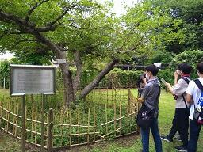


令和4年度SSH生徒研究発表会


SSH通信No.4
SSH通信No.4を発行しました。
内容はSSH講座「マイ分光器を作って光源の性質を調べよう」と算額の世界についてです。
ぜひご覧ください。
https://cms2.chiba-c.ed.jp/sakura-h/17872fd488f90b7aed8eec4572b51f71/SSH%E9%80%9A%E4%BF%A1